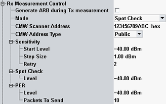

The "Rx Measurement" parameters configure the scope of the measurement.
Option R&S CMW-KD611 is required (only for R&S CMW100/CMW with MUA).

Enables / disables the creation of ARB waveform file during Tx measurement, and enables / disables the use of this ARB waveform file during Rx measurements.
Remote command:Selects spot check, PER or sensitivity search measurement, see "Bluetooth Rx Tests".
Remote command:Specifies the device address of the R&S CMW. The R&S CMW acts as a scanner. The device address of the EUT is detected automatically.
Remote command:- Public: Unique 48-bit address of each Bluetooth LE device using an organizationally unique identifier (OUI) obtained from the IEEE registration authority
- Random: 48-bit random static, non-resolvable private, or resolvable private device address of a Bluetooth LE device. A random address is optional. It can be directly generated by the beacon.
Specifies settings for "Mode" = "Sensitivity".
Sets Tx start level of for sensitivity search measurement.
Remote command:Sets the step size for decreasing Tx level of R&S CMW for sensitivity search measurement.
Remote command:Specify the number of retry attempts per step for sensitivity search measurement.
Remote command:Sets the constant Tx level of R&S CMW for SCAN_REQ transmission for "Mode" = "Spot Check".
Remote command:Specifies settings for "Mode" = "PER".
Sets the constant Tx level of R&S CMW for SCAN_REQ transmission.
Remote command:Defines the number of SCAN_REQ packets for PER measurements.
Remote command: